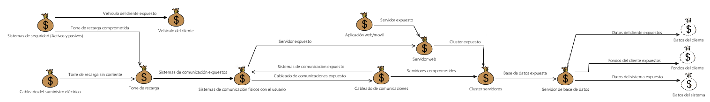
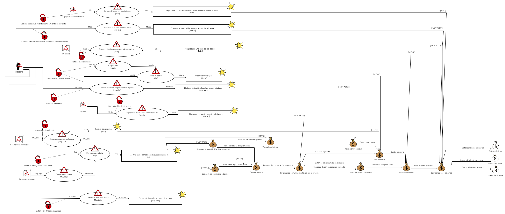

Análisis de Riesgos en SmartGrids
Dos escenarios
- Puntos de carga configurados en el exterior
- Puntos de carga configurados en zonas cerradas
Puntos de carga en el exterior
Área física
- Aislamiento
- Facilidad de acceso al área
- Entorno
Comunicación cliente-P.C.
- RFID/NFC
- OTP
- Usuario / Contraseña
- Código QR
- Huella dactilar
Comunicación actores-control
Comunicación cableada VS comunicación inalámbrica
Actores
- Personal de mantenimiento
- Clientes
- Puntos de carga
- Proveedores de energía
- Servidores
Puntos de carga en zonas cerradas
Área física
- Aislamiento y control
- Facilidad de acceso al área
- Entorno
Comunicación cliente-P.C.
Comunicación actores-control
Diferencias en el tipo de comunicación entre los distintos actores y el sistema de control
Assets
- Físicos
- Digitales
Assets físicos
- Cableado de comunicaciones
- Suministro eléctrico
- Terminal
- Cluster de servidores
- Vehículo del cliente
- Sistemas de comunicación con el usuario
Assets digitales
- Datos del cliente
- Datos del sistema
- Servidor web
- Aplicación móvil
- Base de datos
- Aplicación web
Relaciones entre assets
Cuello de botella en los sistemas de comunicación
Amenazas
Directas
- Corte de suministro eléctrico
- Keyloggers
- Session hijacking
- Ataques DDoS
Indirectas
- Suplantación de identidad involuntaria
- Inclemencias meteorológicas
- Fallos en el mantenimiento
- Pérdida de dispositivos de identificación
Vulnerabilidades
- Errores del diseño
- Falta de aislamiento en el hardware
- Falta de mantenimiento
- Control de acceso ineficiente
- Sistema eléctrico inseguro
Amenazas a la confidencialidad
Posibles ataques
- Ataques virales
- Inyección SQL
- Keyloggers
- Suplantación voluntaria de identidad
Matriz PI
| Impacto \ Probabilidad | Muy alto | Alto | Medio | Bajo | Muy bajo |
|---|---|---|---|---|---|
| Muy Alto | 3 | - | 4 | - | - |
| Alto | - | - | - | - | - |
| Medio | - | - | - | - | - |
| Bajo | - | 1 | - | - | 2 |
| Muy Bajo | - | - | - | - | - |
Diagrama

Amenazas a la disponibilidad
Posibles ataques
- Ataques DDoS
- Inyección SQL
- Desastres naturales
- Destrozo por terceros
- Corte del suministro eléctrico
Matriz PI
| Impacto \ Probabilidad | Muy alto | Alto | Medio | Bajo | Muy bajo |
|---|---|---|---|---|---|
| Muy Alto | 3 | - | 4, 5 | - | 7 |
| Alto | - | 8 | - | - | - |
| Medio | - | - | - | - | 1 |
| Bajo | 6 | - | - | 2 | - |
| Muy Bajo | - | - | 9 | - | - |
Diagrama
Amenazas a la integridad
Posibles ataques
- Suplantación voluntaria de identidad
- Suplantación involuntaria de identidad
- Inyección SQL
- Fallos de persistencia
Matriz PI
| Impacto \ Probabilidad | Muy alto | Alto | Medio | Bajo | Muy bajo |
|---|---|---|---|---|---|
| Muy Alto | 3 | - | 4 | 5 | - |
| Alto | - | - | - | - | - |
| Medio | - | - | - | - | - |
| Bajo | - | 1 | - | - | - |
| Muy Bajo | - | - | - | - | 2 |